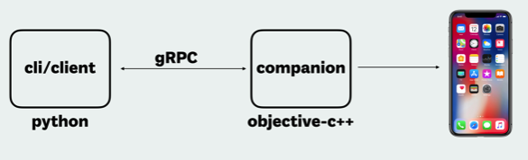

常见框架
移动端自动化测试常见框架：
- 多平台支持
- 单个平台
Androiduiautomator2=u2
iOSfacebook-wdaidb=iOS Development Bridge- 主页
- Facebook新出的
- 架构
- 
- 缺点：
- 需要改动被测app的代码才能自动化测试？
- 想要测试（iOS模拟器或真机）设备，要在被测设备中安装xctest测试用例才可以
- 需要改动被测app的代码才能自动化测试？
u2和facebook-wda都是ATX拆分出来的
最早是：
NetEaseGame/ATX: Smart phone automation tool. Support iOS, Android, WebApp and game
后来拆分成：
Android的uiautomator2iOS的facebook-wda
iOS自动化测试框架发展历史
- iOS底层测试框架
- iOS
8.0 ~ 9.3：UIAutomation- 缺点：只能调试单台设备
- 原因：
instruments限制单台Mac只能对应单台iOS设备
- 原因：
- 缺点：只能调试单台设备
- iOS
9.3+: XCUITest- 目的：用以替代旧的
UIAutomation
- 目的：用以替代旧的
- iOS
- 第三方
WebDriverAgent- 作者：
Facebook - 核心原理：实现了
WebDriver的server- 通过 server 可以远程控制 iOS 设备
- 支持各种操作：启动应用、关闭应用、点击、滚动等
- 通过连接 XCTest.framework 调用苹果的 API 执行动作
- 通过 server 可以远程控制 iOS 设备
- 优点
- 能够支持单台
Mac对应多个iOS设备- 支持多个设备同时进行自动化
Appium、Macaca已经集成
- 能够支持单台
- 作者：